Thirteen slides from a single day’s lecture for a graduate course on vocal music I designed and taught at FSU, annotated to show my sequencing decisions.
You don’t need to read music to understand the sequencing below. Where a slide shows music notation, I explain what that image is conveying.
Course
MUT 5619, Vocal Forms — graduate course, Florida State University College of Music, Fall 2025.
My role
Sole author. Research, sequence, slide design, repertoire selection, and the teaching.
Shown here
13 of 47 slides from the Melodic Analysis lecture deck, in original order. Slide numbers are the deck’s own.
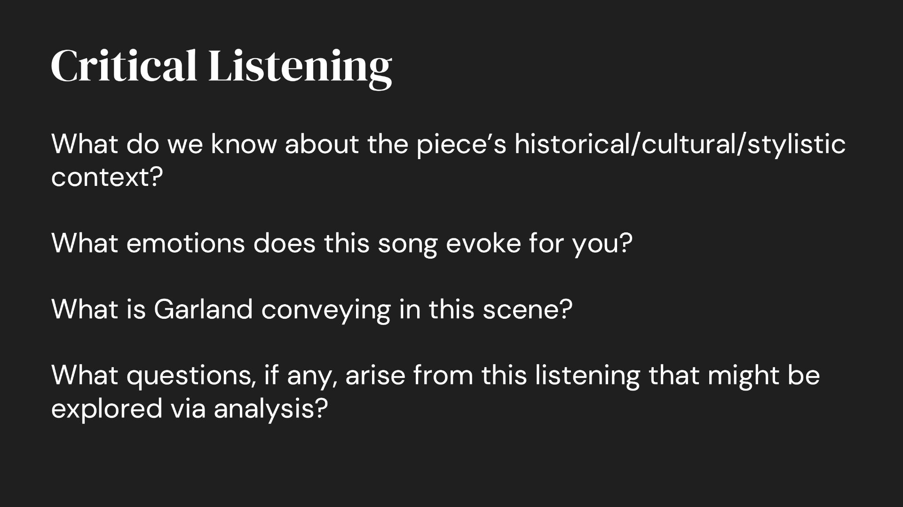
Critical Listening was established as an analytical practice in the first class of the semester. Each of the four questions here activates a different tactic learned in that first session. The framing was important not only for lectures, but as the starting point for the students’ own work on assessments throughout the term.
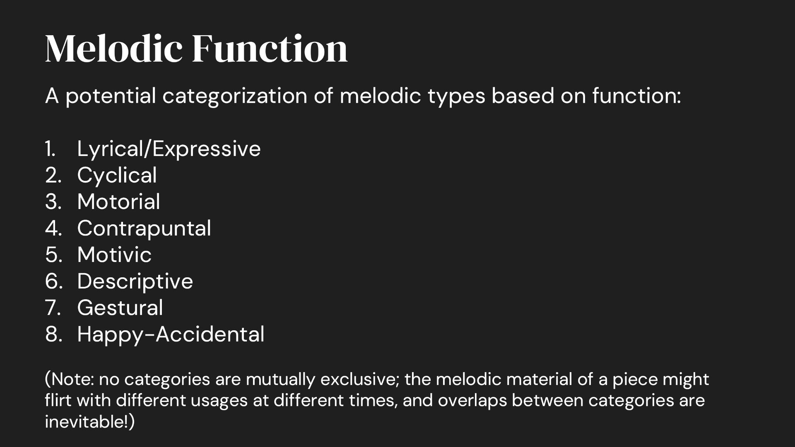
Eight categories of melodic function, followed immediately by a note that none are mutually exclusive and overlaps are inevitable. This was to avoid getting bogged down in classification questions. Instead, we used it as a lens to discuss which functions are at play in any given example.
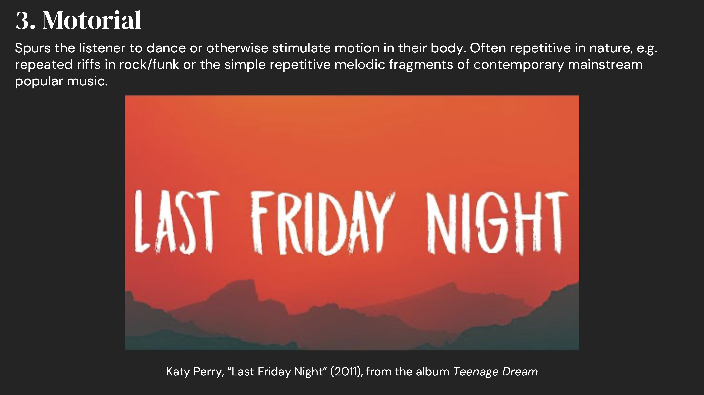
Teaching popular music in a theory course is not unusual anymore, but teaching it as equally worthy of analytical attention still is. Pop is often used to grab students’ attention, but abandoned once the “real work” of analyzing the classical canon begins. Here, the melodic function categories serve to neutralize that value judgment, describing the music by what it does instead of what it is.
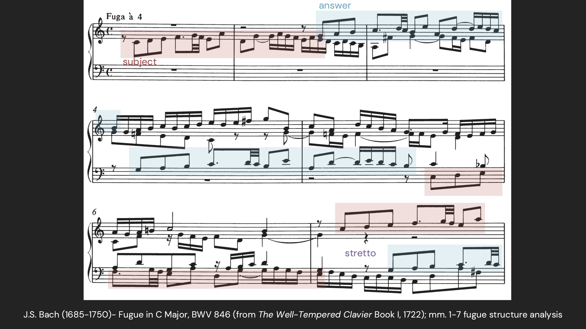
Everyone in this room reads music. But music notation is a practical tool, not one designed for analysis. Scores often hide their own architecture — in this case, fugue subjects, answers, and stretto are interleaved across the staves in identical black notation, so locating them means tracing lines by eye. Overlaying color and labels puts all three in view at once.
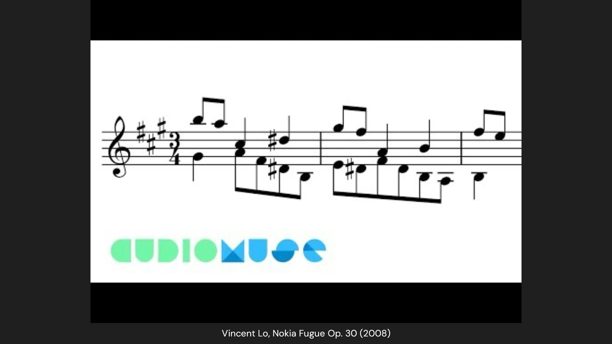
Immediately after the Bach, a 2008 fugue built on the Nokia ringtone. It proves the fugue structure is a portable procedure, and it pushes 2000s-era nostalgia buttons for my Gen Z students.
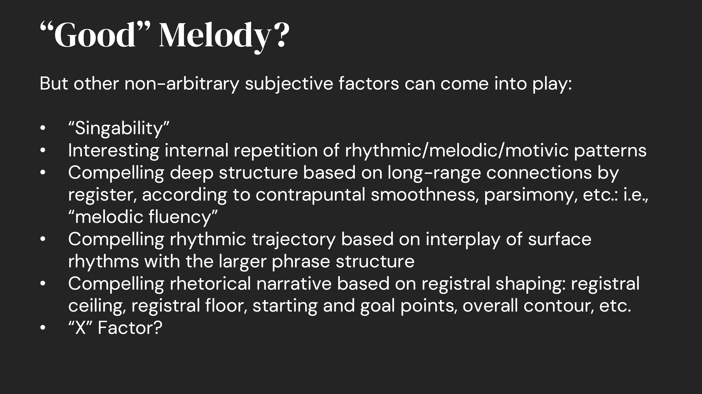
Music students often balk at openly judging works. They say “musical taste is subjective,” as if that fact means no professional evaluation can take place. But they know from their daily work that isn’t true. So I often couch these evaluations in terms of the actual kinds of “non-arbitrary subjective factors” professionals use subconsciously but often aren’t aware of.
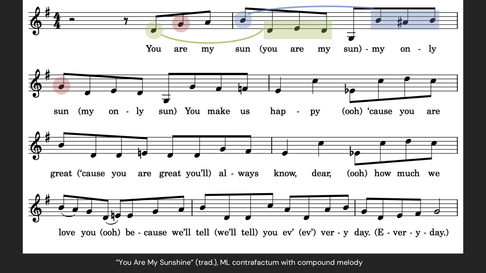
Compound melody as a concept sounds iffy on paper, but anyone who listens to music hears this kind of structure instinctively. This is a version of “You Are My Sunshine” I wrote myself — originally a lullaby for my own kids, which I sang in class to demonstrate what they already know. Doing this comes with an added bonus: humanizing their lecturer.
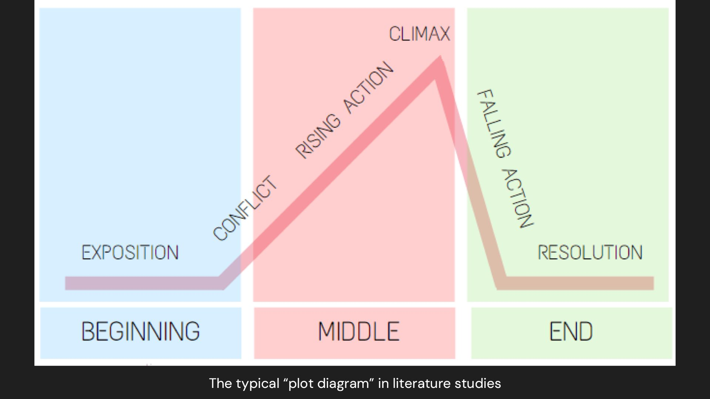
The slide before this one draws melodic shape as an abstract curve — start, apex, nadir, finish. This one puts the literature plot diagram beside it. Every time I used this combo it was met with nods and grunts of recognition from my students as they recalled it from their high school days.
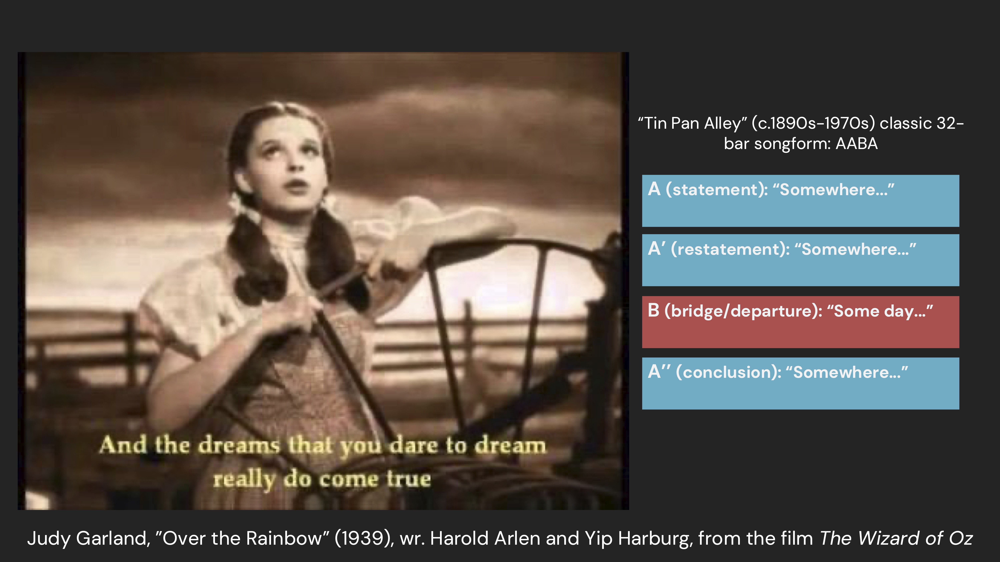
We listen to “Over the Rainbow” a second time, with the 32-bar AABA song form labeled as it plays. No analysis happens here, just more critical listening, this time with a visual aid.
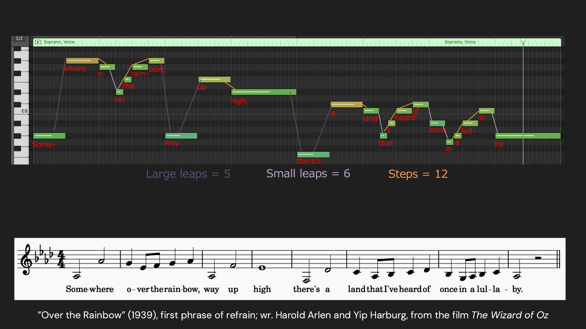
Slide 42 sets the opening phrase out syllable by syllable and tallies every interval: five large leaps, six small, twelve steps. The claim that the melody is mostly stepwise is evidenced rather than simply asserted. Slide 43 then lays the contour labels over the same phrase: apex, nadir, registral floor, start, finish. Because the image underneath doesn’t change, the only variable is the annotation. This is the payoff of the abstract diagram on slide 38.
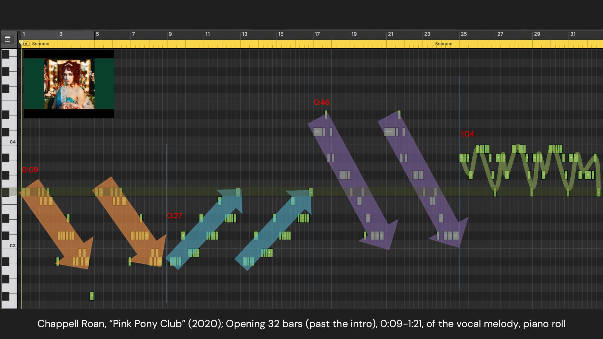
The first pass carries section arrows that were animated in class against an embedded recording, each one arriving as the song reached that point, so the shape unfolded in time with what students were hearing. The second pass lays apex, nadir, start, and finish over the identical roll. Same two-pass structure as slides 42–43, now on a song eighty years newer than the one the lecture opened with, showing how the analytical method translates across genres and eras. Both songs are about a girl who wants out of where she is, and the contours tell you which one got there: Dorothy’s melody keeps resolving to the same pitch, while Chappell Roan’s ranges far up and down before settling at the chorus, showing without telling that she has arrived. Two melodic shapes, two outcomes, and the argument for looking at contour at all.
This course and the parenting module were built for learners with very different needs. But both are designed with similar principles.